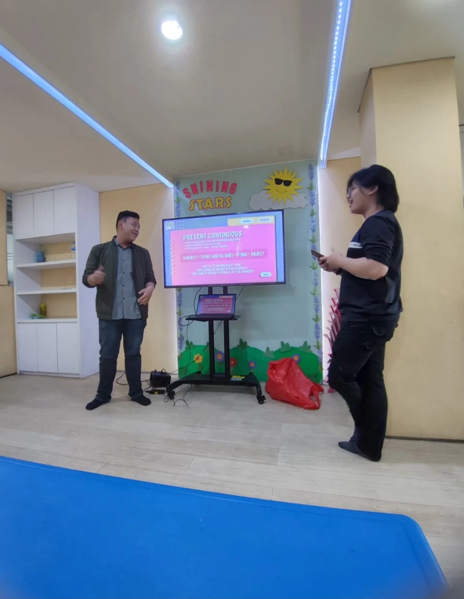
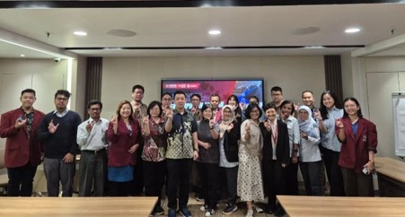
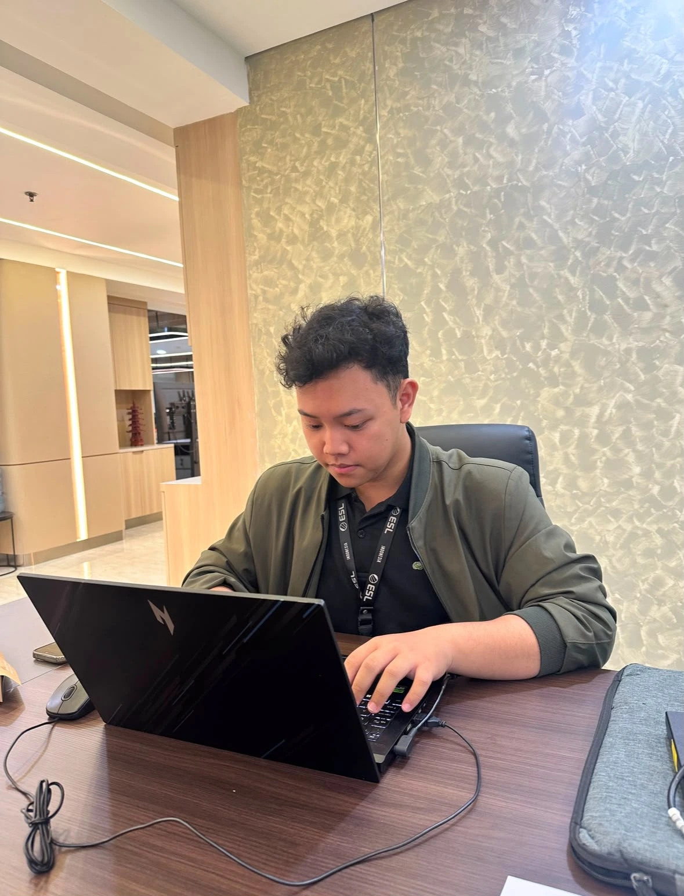

Administrative Staff
Learning and Academic Innovation Institute, UNTAR
Academic guidelines, quality assurance documentation, and visual materials for university events.
code this code that,
design this design that



I’m Claudio, an Informatics Engineering student who enjoys turning ideas into useful, thoughtful digital experiences.
From a computer-based testing platform to a business website, I’ve worked with teams to connect what people need with what technology can do. I bring a hands-on approach to frontend, backend, and everything I’m still curious enough to learn.
I’m looking for a software development internship where I can contribute, keep learning, and build things that make everyday life a little easier.
Scroll into my little universe.
Learning and Academic Innovation Institute, UNTAR
Academic guidelines, quality assurance documentation, and visual materials for university events.
Helping students work through concepts and exercises with clarity and patience.
Gen Space, Gereja Bethel Indonesia
Adapting lessons for students from elementary through high school.
Adullam Youth, Gereja Bethel Indonesia Daan Mogot
Creating promotional content and supporting social media communication for youth activities.
Academic Webinar, PT Molita Mentari Mulya
Supporting event preparation and moderating the webinar discussion.
TOEFL Test 2025, Tarumanagara English Club
Preparing publication materials and visual designs for the event.